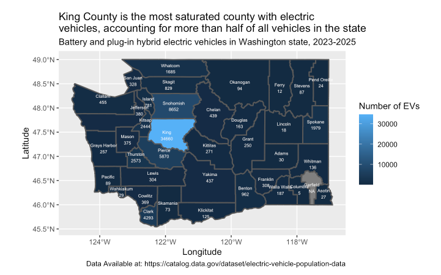

01
Electric Vehicles and Income Patterns in WA State
Analyzed more than 70,000 electric vehicle registration records alongside county income data to examine relationships across Washington counties.
R
RStudio
Data Wrangling
Visualization
View project↗